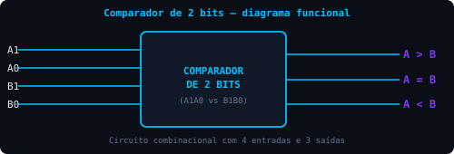
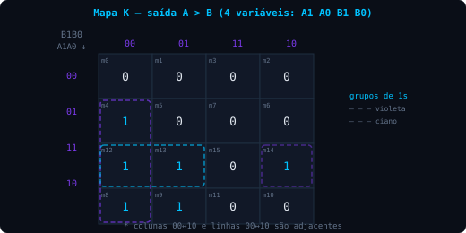
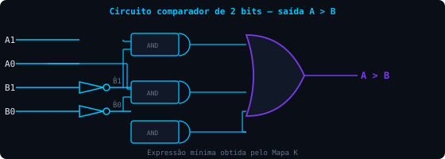

Sistemas Digitais · Ibmec RJ
Objetivos de aprendizagem
5.1 / comparador de 2 bits
Um comparador é um circuito combinacional projetado para comparar a grandeza relativa de duas palavras binárias.

Fig. 5.1 — Diagrama funcional do comparador de 2 bits
A tabela-verdade que descreve o funcionamento do circuito é a seguinte:
| A1 | A0 | B1 | B0 | A>B | A=B | A<B |
|---|---|---|---|---|---|---|
| 0 | 0 | 0 | 0 | 0 | 1 | 0 |
| 0 | 0 | 0 | 1 | 0 | 0 | 1 |
| 0 | 0 | 1 | 0 | 0 | 0 | 1 |
| 0 | 0 | 1 | 1 | 0 | 0 | 1 |
| 0 | 1 | 0 | 0 | 1 | 0 | 0 |
| 0 | 1 | 0 | 1 | 0 | 1 | 0 |
| 0 | 1 | 1 | 0 | 0 | 0 | 1 |
| 0 | 1 | 1 | 1 | 0 | 0 | 1 |
| 1 | 0 | 0 | 0 | 1 | 0 | 0 |
| 1 | 0 | 0 | 1 | 1 | 0 | 0 |
| 1 | 0 | 1 | 0 | 0 | 1 | 0 |
| 1 | 0 | 1 | 1 | 0 | 0 | 1 |
| 1 | 1 | 0 | 0 | 1 | 0 | 0 |
| 1 | 1 | 0 | 1 | 1 | 0 | 0 |
| 1 | 1 | 1 | 0 | 1 | 0 | 0 |
| 1 | 1 | 1 | 1 | 0 | 1 | 0 |
A figura abaixo apresenta o Mapa K para a saída A>B:

Fig. 5.2 — Mapa K para a saída A > B
A partir do Mapa K, obtém-se o circuito apresentado na figura abaixo:

Fig. 5.3 — Circuito comparador de 2 bits, saída A > B
5.2 / ci comparador
Como outros circuitos funcionalmente importantes, o comparador pode ser obtido na forma integrada.
datasheet de referência
Ver o datasheet do 74LS85 →
checkpoint
Um comparador de 2 bits possui quantas entradas e quantas saídas?
Para A1=1, A0=0, B1=0, B0=1 (A=10, B=01 em binário), qual saída deve ser 1?
Qual ferramenta foi utilizada para obter a expressão mínima da saída A>B a partir da tabela-verdade?
referências e aprofundamento